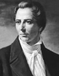

Mormon Kilisesi’nin ilk lideri olan Joseph Smith Jr. (1805–1844) yaşadığı dönemde hakaret ve baskılara maruz kaldı. Günümüzde ise kendisine dünyanın dört bir yanındaki Mormonlar tarafından kilisenin kurucusu olarak büyük bir saygı gösterilmektedir.

Smith, Orta Vermont’taki küçük bir çiftçi köyünde doğdu. O ve ailesi 1816 yılında New York’taki Palmyra’ya taşındılar. Duygusal bir çocuk olan Smith 1820 yılında dini hayaller görmeye başladı. 1823 yılında ise söylediğine göre ormanda gezerken Moroni adında bir melekle karşılaşmıştı.
Melek, Smith’e gerçek Hıristiyan kilisesinin ortadan kaybolduğunu ve onu geri getirmenin Smith’in görevi olduğunu söyledi. New York’taki Manchester yakınlarında bir tepeyi kazacak ve orada altın plakalara yazılmış kutsal kitapları bulacaktı. Smith 1827 yılında büyük bir taş sandığın içinde bu plakaları bulduğunu iddia etti. Bunlar hiç bilinmeyen bir dilde yazılmıştı: yeni Mısırca (reformed Egyptian). Smith bunları tercüme etmeyi başarmıştı. Çevirilerini 1830 yılında Mormon Kitabı adıyla yayınlandı.
Mormon Kitabı’nda söylenenlere göre eski Tevrat, coğrafi keşiflerden binlerce yıl önce İbraniler tarafından Amerika’ya getirilmişti. Toplumları ve dilleri yok olmasına rağmen Tevrat’ı Amerika’ya taşıyanların soyundan gelenler Amerikan yerlileri olarak yaşamlarını sürdürüyordu.
Smith kilisesini 6 Nisan 1830 tarihinde kurdu. Ne var ki Mormonlar başlangıçta şüpheyle karşılandılar. Smith’in altın tabletleri ile alay edildi. Hatta 1832 yılında bir kalabalık tarafından Smith katrana bulanıp üzerine kuş tüyü bile döküldü. Mormonlar baskıdan kaçabilmek için Ohio ve Missouri’ye gittiler. En sonunda İllinois’teki Commerce kasabasına yerleştiler. Smith buraya Nauvoo adını verdi.
Nauvoo’ya yerleştiğinde Smith’in yirmi bin takipçisi vardı. Kasabada diktatöryal güçler elde etti. Bir milis gücü kurdu. Kendisine muhalafet eden Nauvoo Expositor gazetesini kapattı. Gazetenin kapatılması protestolara neden oldu. Smith milis gücünü Nauvoo’yu koruması için göreve çağırınca İllinois’teki görevliler tarafından tutuklandı. Vatana ihanetle suçlandı. Yargılamayı beklerken 27 Haziran 1844 günü öfkeli bir kalabalık tarafından öldürüldü.
Ek Bilgiler
1- Smith’in “Mormon Kitabı”nın ilk baskısı sadece 5 bin adet basılmıştır. Bu kopyalardan biri 2007 yılında yapılan bir açık arttırmada 180 bin dolara satılmıştır.
2- Smith’in ölümünün ardından takipçilerinin büyük bölümü Utah’a gitti. Utah, 1849 yılında ABD’ye katılmaya çalıştı. Ancak Kongre, Mormonların çok eşlilik adetine karşı olduğu için istekleri geri çevrildi. Kilise 1890 yılında çok eşliliği yasakladı. Bunun üzerine Utah 1896 yılında 45. eyalet olarak ABD’ye katıldı.
3- Smith ilk eşi Emma Hale (1804–1879) ile 1827 yılında evlendi. Mormon Kilisesi’nin kurulmasının ardından düzinelerce farklı kadınla evlendi. Kimi tahminlere göre elliye yakın eşi vardı.